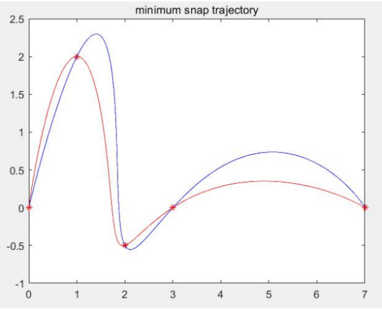

Research Experience and Manuscripts
Decision Making and Motion Planning Research Intern, Qcraft
Semester Project in ETH Zuerich
Temporal Sampling-Based Algorithm for Motion Planning in Dynamic Environments. [Report]
Sampling-based motion planning has become highly popular in industry and academia, due to its flexibility and ability to deal with high dimensional planning. Despite the introduction of a great number of algorithms, most of these focus on either motion planning in dynamic environments for holonomic robots, or handling differential constraints in static environments. In this work, we present Temporal RRT, an incremental sampling-based approach for motion planning able to avoid moving obstacles, which can further extend to the planning for nonholonomic robots. The proposed approach extends RRT by adding the time dimension in the tree, encoding each vertex the time-to-arrive and the collision-free time intervals. In addition, We present its successful extension to nonholonomic planning in two different robots, dubins cars and quadrotors. A series of experiments demonstrates that our planner generates more efficient paths, outperforming other state-of-the-art sampling based planners. Furthermore, we show that our algorithm is able to perform real-time planning in simulation.
Research Assistant in University of Wisconsin, Madison (UW-Madison)
Design Safe Trajectories for Quadcopters. [Report]
Other mini-Projects in ETH Zuerich
Probabilistic Artificial Intelligence
Deep Learning for Autonomous Driving
- Multi-Task Learning for Semantics and Depth
- 3D Object Detection from Lidar Point Clouds - Point-RCNN. [Report 1], [Report 2]

Dynamic Programming and Optimal Control
- Policy Iteration, Value Iteration, and Linear Programming. [Problem Statement] [Solution Example]
Vision Algorithms for Mobile Robotics
{kind=link}